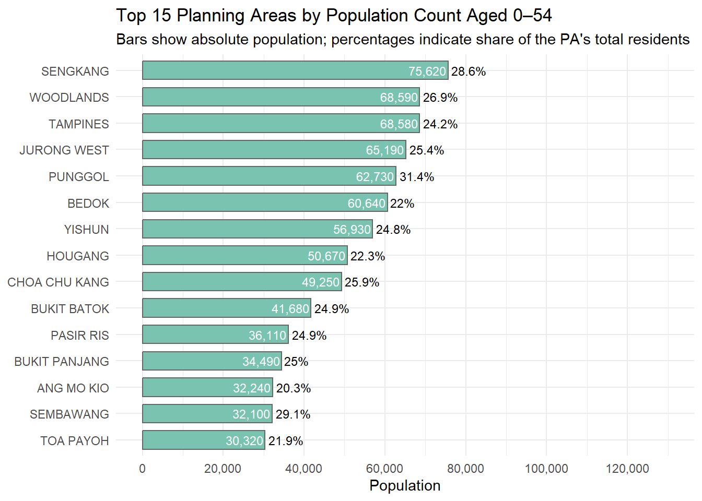
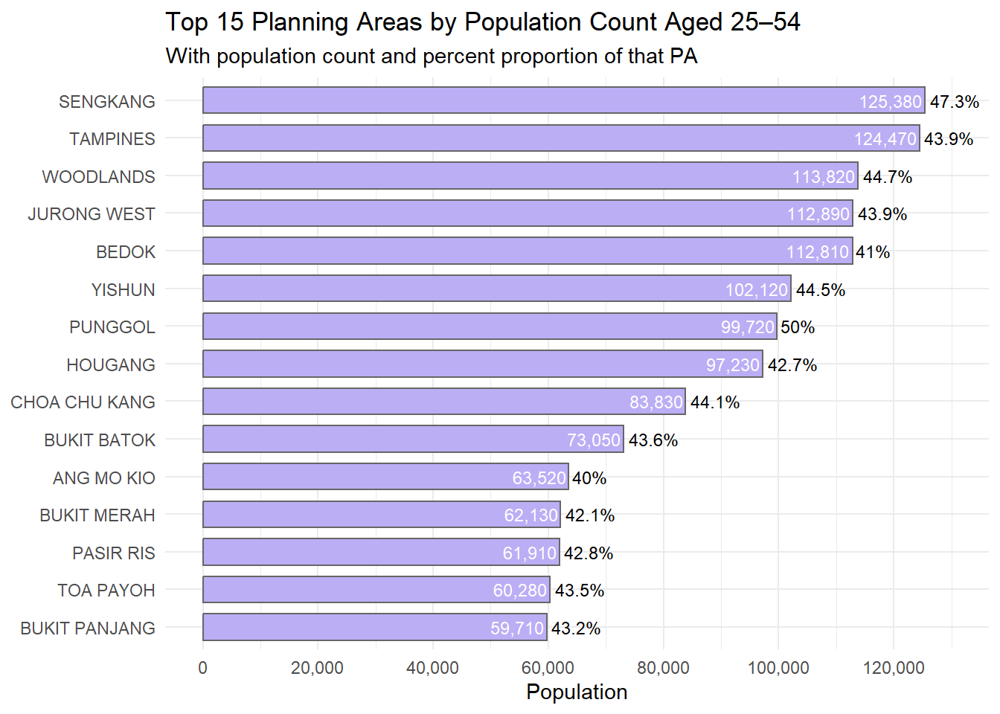
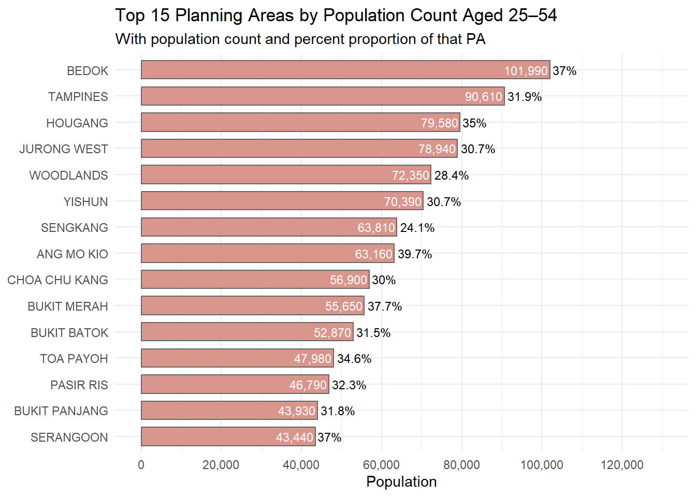
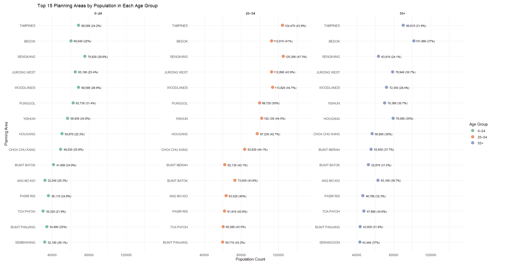

This report evaluates a peer-produced visualisation that illustrates the youth demographic structure of Singapore in 2024. The original chart, titled “Top 15 Planning Areas by Population Count”, was designed to support a public-facing article for a digital media platform. These charts aimed to segment demographic insights clearly by age band.
The charts below illustrate the original submission:
Youth (0–24 years)
── Attaching core tidyverse packages ──────────────────────── tidyverse 2.0.0 ──
✔ dplyr 1.1.4 ✔ readr 2.1.5
✔ forcats 1.0.0 ✔ stringr 1.5.1
✔ ggplot2 3.5.2 ✔ tibble 3.2.1
✔ lubridate 1.9.4 ✔ tidyr 1.3.1
✔ purrr 1.0.4
── Conflicts ────────────────────────────────────────── tidyverse_conflicts() ──
✖ dplyr::filter() masks stats::filter()
✖ dplyr::lag() masks stats::lag()
ℹ Use the conflicted package (<http://conflicted.r-lib.org/>) to force all conflicts to become errors
Rows: 60424 Columns: 6
── Column specification ────────────────────────────────────────────────────────
Delimiter: ","
chr (4): PA, SZ, Age, Sex
dbl (2): Pop, Time
ℹ Use `spec()` to retrieve the full column specification for this data.
ℹ Specify the column types or set `show_col_types = FALSE` to quiet this message.
Warning: There was 1 warning in `mutate()`.
ℹ In argument: `Age = as.integer(Age)`.
Caused by warning:
! NAs introduced by coercion

Adults (25–54 years)

Seniors (55 years and above)

Each chart shows the top 15 planning areas by population count for the respective age group, with percentages indicating the age group’s share of each area’s population.
While the visualisations were neatly structured, they were fragmented and repetitive. This analysis proposes a consolidated makeover visualisation that enhances interpretability and supports direct comparisons across age groups.
Using the Magic Quadrat framework (truthfulness, functionality, beauty, and insightfulness), this analysis proposes a consolidated makeover visualisation that enhances interpretability and supports direct comparisons across age groups.
2 Critique of Original Visualisation
2.1 Good Design Principles
Clear Age Group Segmentation:
The decision to separate the population into distinct age bands (youths (0–24), adults (25–54), and seniors (55+)) aligns well with demographic conventions and enhances interpretability for a non-technical audience. This categorical breakdown makes it easier to communicate policy-relevant patterns tied to different life stages.
Contextual Enrichment Through Percentages:
Beyond raw population counts, the inclusion of percentage share annotations for each age group within its respective planning area provides important proportional context. This allows the audience to assess not only absolute size but also demographic concentration, adding interpretive richness.
Consistent Ranking Within Groups:
Sorting planning areas by descending population size for each age group helps establish a clear hierarchy and supports quick visual scanning. This consistent layout facilitates within-group comparisons and draws attention to dominant regions in each demographic.
2.2 Areas for Improvement
Lack of Cross-Age Comparison (Siloed Insight):
By separating each age group into its own chart, the original design obstructs any holistic understanding of age distribution across planning areas. It becomes impossible to identify whether certain areas consistently rank high across all age segments or whether others are skewed toward one demographic. This fragmentation limits interpretive depth and prevents strategic insight.
Visual Redundancy and Inefficiency:
The repetition of axes, legends, titles, and tick marks across three nearly identical plots wastes valuable visual space. Moreover, these duplicated design elements create a false sense of separation among age groups, even though they share a common comparative context, the planning area. This violates the principle of visual economy, where each chart element should add unique value.
Flat Aesthetic Encoding (No Functional Colour Logic):
Although the charts use color, it is non-informative. Each plot uses a single arbitrary color not tied to a specific dimension (e.g. age group). This not only reduces the chart’s ability to guide attention but also misses the opportunity to use color to encode demographic segmentation. The result is a neutral visual experience that fails to direct the reader toward meaningful patterns or anomalies — such as age dominance or underrepresentation in particular locations.
3 Installing and Loading Required Libraries
Before loading the libraries, the table below outlines their purpose in this analysis:
Library
Purpose
tidyverse
Core package for data wrangling (dplyr), data import (readr), and plotting (ggplot2).
ggthemes
Provides additional minimalist and publication-ready themes for ggplot2.
scales
Enhances axis formatting, particularly for percentages and large numbers.
patchwork
Allows combining multiple ggplot2 plots into one cohesive layout.
The following object is masked from 'package:purrr':
discard
The following object is masked from 'package:readr':
col_factor
library(patchwork)
4 Importing and Exploring the Data
df <-read_csv("data/respopagesex2024.csv")
Rows: 60424 Columns: 6
── Column specification ────────────────────────────────────────────────────────
Delimiter: ","
chr (4): PA, SZ, Age, Sex
dbl (2): Pop, Time
ℹ Use `spec()` to retrieve the full column specification for this data.
ℹ Specify the column types or set `show_col_types = FALSE` to quiet this message.
df <- df %>%mutate(Age =as.numeric(Age))
Warning: There was 1 warning in `mutate()`.
ℹ In argument: `Age = as.numeric(Age)`.
Caused by warning:
! NAs introduced by coercion
head(df)
# A tibble: 6 × 6
PA SZ Age Sex Pop Time
<chr> <chr> <dbl> <chr> <dbl> <dbl>
1 Ang Mo Kio Ang Mo Kio Town Centre 0 Males 10 2024
2 Ang Mo Kio Ang Mo Kio Town Centre 0 Females 10 2024
3 Ang Mo Kio Ang Mo Kio Town Centre 1 Males 10 2024
4 Ang Mo Kio Ang Mo Kio Town Centre 1 Females 10 2024
5 Ang Mo Kio Ang Mo Kio Town Centre 2 Males 10 2024
6 Ang Mo Kio Ang Mo Kio Town Centre 2 Females 10 2024
5 Data Wrangling
# Define age groupsprocessed_df <- df %>%mutate(AgeGroup =case_when( Age <=24~"0–24", Age <=54~"25–54",TRUE~"55+" ) )# Summarise population by Planning Area and Age Groupdemo_summary <- processed_df %>%group_by(PA, AgeGroup) %>%summarise(GroupPop =sum(Pop), .groups ='drop')# Compute total population per PAtotal_pop <- df %>%group_by(PA) %>%summarise(TotalPop =sum(Pop), .groups ='drop')# Merge and compute percentage sharedemo_summary <- demo_summary %>%left_join(total_pop, by ="PA") %>%mutate(PctShare = (GroupPop / TotalPop) *100)
6 Makeover Version of the Visualisation
Note: The data was processed entirely using the tidyverse family of packages (including dplyr, readr, and ggplot2), which ensures consistent syntax, tidy data principles, and reproducibility. The visualisation was constructed exclusively using ggplot2, fulfilling the requirement to use appropriate tidyverse packages and ggplot2 extensions.
6.1 Rationale for Makeover
The original submission clearly highlighted the top planning areas for each age group independently. To maintain that clarity while achieving consolidation, a faceted dot plot is used. This visualisation retains the individual top 15 planning areas per age group and arranges them into aligned facets. This allows viewers to assess each age segment’s spatial distribution and make side-by-side comparisons without losing age-specific granularity.
# Filter top 15 Planning Areas by Age Grouptop15_by_agegroup <- demo_summary %>%group_by(AgeGroup) %>%slice_max(GroupPop, n =15) %>%ungroup()# Create faceted dot plot visualisation with data labelsmakeover_plot <-ggplot(top15_by_agegroup, aes(x = GroupPop, y =reorder(PA, GroupPop))) +geom_point(aes(color = AgeGroup), size =4) +geom_text(aes(label =paste0(format(GroupPop, big.mark =","), " (", round(PctShare, 1), "%)")),hjust =-0.1, size =3 ) +facet_wrap(~ AgeGroup, scales ="free_y") +scale_color_brewer(palette ="Set2") +xlim(30000, 150000) +labs(title ="Top 15 Planning Areas by Population in Each Age Group",x ="Population Count",y ="Planning Area",color ="Age Group" ) +theme_minimal() +theme(strip.text =element_text(face ="bold"),plot.margin =margin(10, 60, 10, 10) )makeover_plot
Tip
Note: If the chart appears cut off or compressed, right-click and select “Open image in new tab†to view it in full size. The display may be constrained by site rendering settings.

7 Why the Makeover is Better Than the Original
The original submission consisted of three separate bar charts, each dedicated to one age group: youths (0–24), adults (25–54), and seniors (55+). While this layout offered clear within-group rankings, it hindered cross-group comparisons and resulted in redundant visual elements.
By contrast, the revised makeover consolidates the charts into a single faceted dot plot, providing a compact and coherent comparative view. The visualisation retains the original objective — showing the top 15 planning areas by age group — but enhances it with aligned facets, shared scales, and consistent visual encoding.
Aspect
Original (3 Separate Bar Charts)
Makeover (Faceted Dot Plot)
Comparability Across Age Groups
Limited — viewers must switch between charts
Easy — all age groups aligned side by side
Visual Clarity
Redundant axes and repeated design elements
Minimalist and unified layout, using consistent color, structure, and alignment
Insightfulness
Focused only on intra-group ranking
Reveals overlaps and skews in age composition across PAs
Efficiency of Space
Uses more screen real estate, visual clutter
Compact horizontal layout with faceting
Cognitive Load
Higher — memory and attention are required to compare charts
Lower — comparisons across age groups are immediate
Label Design
Dense with bar values, sometimes overlapping
Data labels appear cleanly beside each dot, showing both counts and percentages
Color Use
Uniform and uninformative
Color encodes age group meaningfully, aiding group distinction
8 Conclusion
The original submission offered a clean breakdown by age, but its tripartite structure obscured intergroup comparisons. The revised grouped bar chart improves on this by presenting all age bands in a single, cohesive visualisation. It supports multi-dimensional analysis, encourages comparative thinking, and remains accessible to a lay audience—meeting both communication and analytical goals for public-facing storytelling.